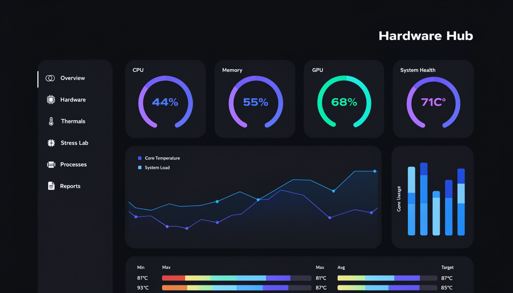
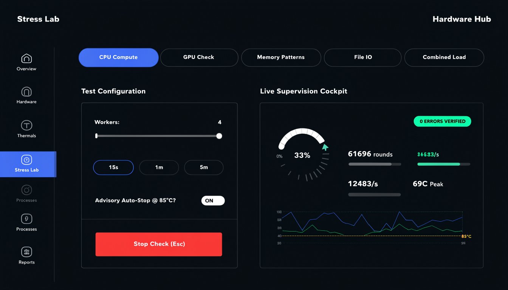
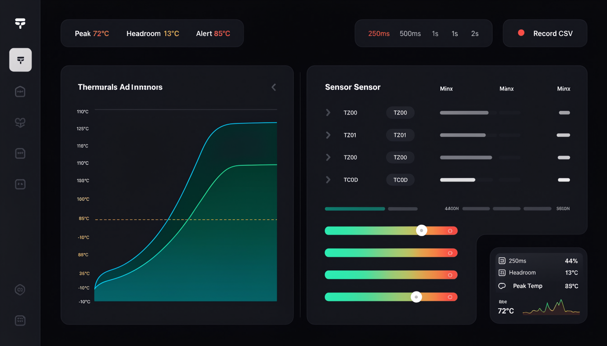

Generated visual direction mockups for approval before modifying src/main.rs (egui 0.31)
Eliminates sidebar overflow and brings live charts + per-core equalizer above the fold.

Replaces clipped 2x2 tiles and buried Stop button with an OCCT-inspired active test cockpit.

Stop Check (Esc) button—no hunting in the sidebar.0 ERRORS VERIFIED pill, throughput counters, and an unclipped live chart with an 85°C dashed limit line.Upgrades plain sensor tables with Min–Current–Max visual range bars and a compact floating HUD.

TZ00, TZ01, TC0D).